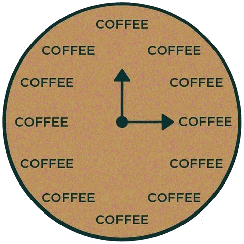
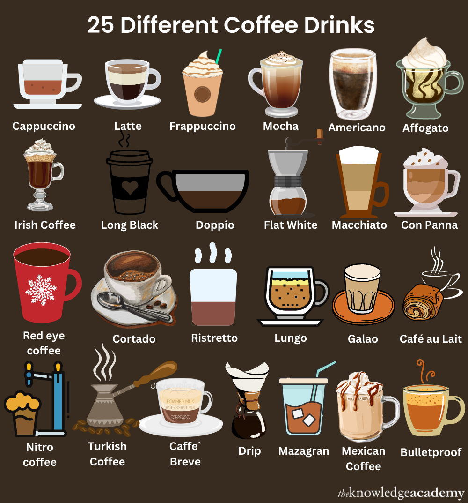
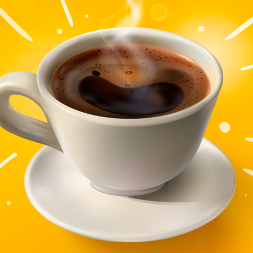
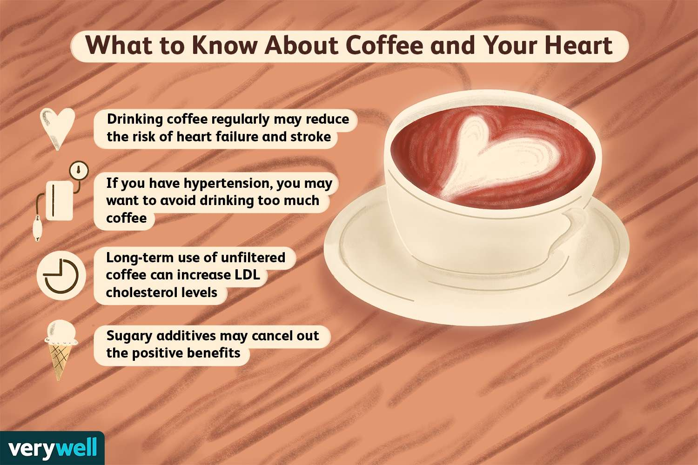

Welcome To My Page
Welcome to my coffee haven!
Thank you for visiting my website,
where every page is brewed to perfection. Here, you'll dive into the rich history of coffee, learn the art of brewing the perfect cup, and discover a variety of delightful coffee types from around the world. So grab your favorite mug, sit back, and enjoy your journey through the world of coffee. ENJOY!
Thank you for visiting my website,
where every page is brewed to perfection. Here, you'll dive into the rich history of coffee, learn the art of brewing the perfect cup, and discover a variety of delightful coffee types from around the world. So grab your favorite mug, sit back, and enjoy your journey through the world of coffee. ENJOY!

Type Of Coffee
Welcome to the World of Coffee! On this page, you'll embark on a
flavorful
adventure, discovering the most famous types of coffee enjoyed across the globe. From
the
bold
and rich Espresso of Italy to the smooth and creamy Lattes of France, each cup tells a
unique
story. Get ready to explore the diverse and delicious world of coffee, one sip at a
time.
Enjoy
your journey!

Mini Game Time ~
Welcome to the Coffee Mini Game! Dive into this interactive
experience
to learn about the effects and potential harms of coffee in a fun and engaging way.
Through
this mini game, you'll discover the benefits of moderation and the risks of
overindulging in
your favorite brew. Play along to understand how coffee impacts your body and why it's
important to enjoy it responsibly. Have fun, and remember—everything in balance!

About
Welcome to Coffee Haven! Discover the origins, brewing methods, and
flavors of coffee from around the world. Whether you're a coffee expert or a newcomer,
explore tips, insights, and recipes to perfect your brew. Enjoy your coffee journey!


Feel free to leave any comments about my page.🤟🏻
Much appreciated.🫶🏻